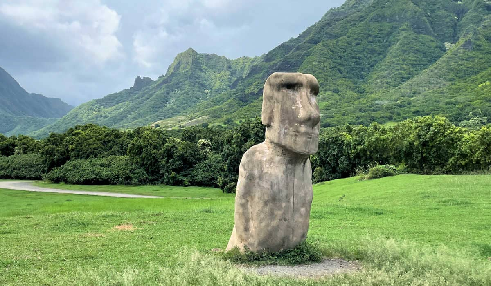
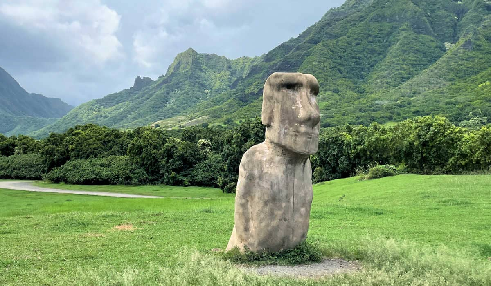

Oahu 70°
Oahu is the most populous island in Hawaii, with a population of over 900,000 people. The majority of Hawaii's residents live on Oahu, making it the most densely populated island as well.Oahu is a melting pot of cultures and ethnicities. It has a rich cultural heritage influenced by Native Hawaiians, Polynesians, Asians (particularly Japanese, Chinese, Filipino, and Korean), Europeans, and other immigrant groups.Oahu is home to several iconic landmarks, including Diamond Head, a volcanic tuff cone that offers panoramic views of Waikiki and Honolulu; Pearl Harbor, a historic site that played a significant role in World War II; and the famous Waikiki Beach, a popular tourist destination.Oahu is often considered the birthplace of modern surfing. The North Shore of the island, particularly spots like Pipeline and Sunset Beach, is renowned for its massive waves and hosts prestigious surfing competitions, including the Vans Triple Crown of Surfing.Hanauma Bay: Located on the southeastern coast of Oahu, Hanauma Bay is a popular destination for snorkeling and marine life observation. The bay is a protected nature preserve, known for its vibrant coral reef and diverse marine ecosystem.Oahu has a vibrant culinary scene, influenced by its diverse cultural heritage. From traditional Hawaiian cuisine to international fusion dishes, the island offers a wide variety of dining options, including food trucks, local markets, and renowned restaurants. Oahu offers diverse landscapes, ranging from picturesque beaches and lush rainforests to rugged mountains and valleys. Visitors can explore attractions like Hanauma Bay, Kualoa Ranch, Manoa Falls, and the Makapuu Lighthouse Trail, each offering unique natural beauty.

 
